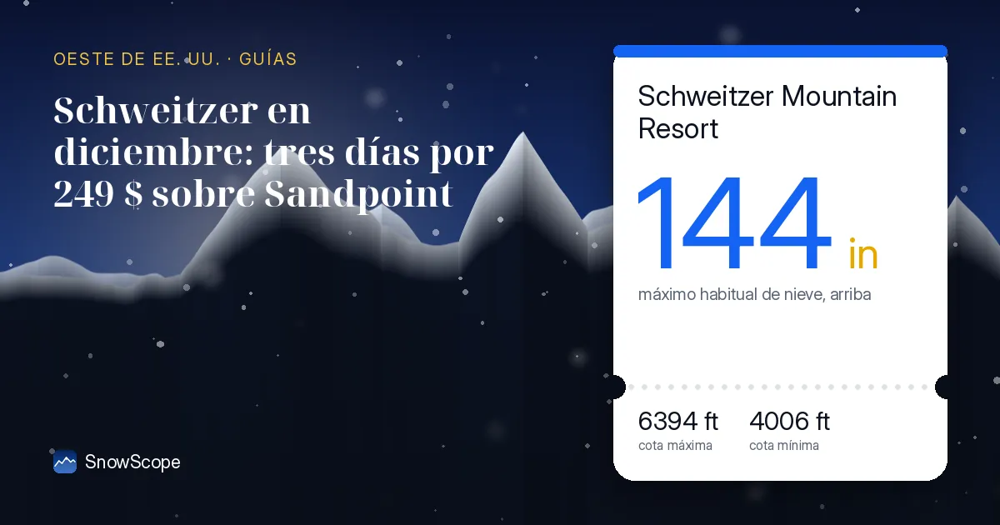

Schweitzer en diciembre: tres días por 249 $ sobre Sandpoint
Schweitzer Mountain Resort se sitúa en una larga cresta sobre Sandpoint, Idaho, ascendiendo 728 m desde el nivel del lago hasta la cima. Para un viaje en diciembre, el 3-Pack a 249 dólares por tres días de esquí te permite elegir las mejores ventanas de nieve sin comprometerte con los precios de temporada alta.
Consulta la previsión de nieve en tiempo real de Schweitzer Mountain Resort en la app SnowScopeEspesor de nieve, alertas de nieve polvo y mapa 3D, gratis.
La altitud lo es todo en diciembre
El terreno de Schweitzer abarca 1221 m en la base a 1949 m en la cima, con 10 remontes que sirven aproximadamente 74 km de pistas. Este gran desnivel importa en diciembre: la base y la cima esquían en estaciones de nieve diferentes. El 15 de diciembre, la base es fina con 55 cm, media montaña a 1585 m tiene 90 cm, y la cima alcanza 138 cm.
Por Navidad el panorama cambia hacia arriba: media montaña llega a 109 cm y la cima a 152 cm. Por Nochevieja, media montaña está en 124 cm. Los esquiadores de principios de diciembre deberían mantenerse en los remontes superiores; los visitantes de finales de mes pueden esquiar más abajo.

Cuándo la nieve es más fiable
La nieve a media montaña es lo bastante fiable para planificarse alrededor. El 15 de diciembre, el 85 % de los inviernos anteriores tenían 50 cm o más—una garantía rara a principios de temporada. Ese porcentaje sube al 98 % por Navidad y se mantiene en 98 % hasta Nochevieja. La primera semana de diciembre tiene buena nieve (definida como un promedio semanal de 50 cm o más) solo en el 72 % de los inviernos, pero para la semana de Navidad eso sube al 98 %.
La base es más arriesgada: solo el 35 % de los diciembres empiezan con 50 cm el 1 de diciembre, aunque el 85 % lo alcanzan en el 31. El invierno pasado fue una excepción—la base tenía solo 6 cm el 1 de diciembre y 28 cm el Día de Navidad—pero la mayoría de años se recuperan antes de fin de mes.

El 3-Pack y la estrategia de precios
Tres días por 249 dólares salen a 83 dólares por día, válido para toda la temporada 2026-27. Ese precio te permite saltarte fechas de máxima afluencia y reservar solo cuando el pronóstico se vea bien. Diciembre tiene ventanas naturales de buena nieve: la segunda mitad del mes tiene muchas más probabilidades de dar buen resultado que la primera.
Comparado con alternativas cercanas, Schweitzer cuesta más por día que Lookout Pass (que empieza en 63 dólares entre semana) o Brundage (que comienza en 65 dólares en días seleccionados), pero la nieve más profunda de Schweitzer en la cima y su mayor terreno justifican la diferencia para un visitante de jornada completa.
Cómo esta década se compara con el pasado
El registro a largo plazo muestra que la nieve a media montaña ha subido ligeramente con el tiempo. En los primeros 15 inviernos de registros (1980-81 a 1994-95), un 15 de diciembre típico traía 104 cm y el 100 % de los inviernos superaban 50 cm. Los últimos 15 inviernos (2011-12 a 2025-26) promediaron 80 cm en esa fecha, con el 73 % de los inviernos por encima del umbral.
La temporada pasada rompió la pauta: media montaña tenía solo 16 cm el 15 de diciembre, el comienzo más seco en muchos años. Pero diciembre en conjunto se mantuvo: el 25 llegó a 51 cm, y a fin de año 91 cm. El final de diciembre es mucho más predecible que el principio.
Qué empacar y saber antes de ir
La niebla y las nubes bajas son frecuentes en la cresta, especialmente a principios del día, así que lleva gafas con lente de luz baja. La carretera hacia arriba desde Sandpoint es empinada y estrecha: lleva cadenas o usa neumáticos de invierno, y dedica tiempo a una subida lenta si la carretera está mojada.
Tres días también reparte tu riesgo: puedes esperar a un pronóstico despejado y saltarte un día marginal. Si vas a principios de diciembre, planifica pasar la mayoría del tiempo por encima de media montaña; si vas después del 20, toda la montaña se abre.
Consejos para esquiadores
- Reserva el 3-Pack antes del viaje y espera para decidir qué tres días hasta 7 a 10 días antes de irte, cuando el pronóstico sea más claro.
- Apunta al 15 de diciembre en adelante: del 72 % al 98 % de los inviernos tienen nieve adecuada a media montaña desde esa fecha hasta Nochevieja.
- Principios de diciembre (antes del 15): usa solo los remontes superiores. La base es fina y puede haber rocas asomando.
- Los neumáticos de invierno o las cadenas son imprescindibles en la carretera de acceso. Es empinada y puede estar helada incluso cuando las carreteras del valle están despejadas.
- Lleva una lente de luz baja para tus gafas. Las nubes en la cima son frecuentes y pueden cegarte con el sol de mediodía en la nieve.
Sobre estas cifras
Los espesores de nieve de las estaciones son la nieve más profunda en las pistas altas en la fecha indicada; son estimaciones para una zona, no una medida en un punto. Las previsiones pueden cambiar. Consulta siempre el boletín oficial de aludes antes de salir fuera de pista.
Boletines oficiales de aludes: avalanche.org (US national portal)
Citar este informe
Para investigación, docencia o prensa: cifras y gráficos reutilizables libremente bajo CC BY 4.0 con esta cita.
SnowScope (2026), Schweitzer en diciembre: tres días por 249 $ sobre Sandpoint, https://snowscope.app/blog/es/2026/11/schweitzer-sandpoint-december-3-pack-deal.html, consultado el 2026-11-14
SnowScope (Atlas Labs). (2026, November 14). Schweitzer en diciembre: tres días por 249 $ sobre Sandpoint. SnowScope snow reports. https://snowscope.app/blog/es/2026/11/schweitzer-sandpoint-december-3-pack-deal.html
BibTeX
@misc{snowscope2026schweitzersandpointdecem,
author = {{SnowScope (Atlas Labs)}},
title = {Schweitzer en diciembre: tres días por 249 $ sobre Sandpoint},
year = {2026},
month = nov,
howpublished = {\url{https://snowscope.app/blog/es/2026/11/schweitzer-sandpoint-december-3-pack-deal.html}},
note = {Published 2026-11-14 20:57 UTC; accessed 2026-11-14}
}· CC BY 4.0 · Métodos, datos y herramientas →
Sigue Schweitzer Mountain Resort
Gratis: un aviso cuando llega la nieve y la previsión cada mañana.